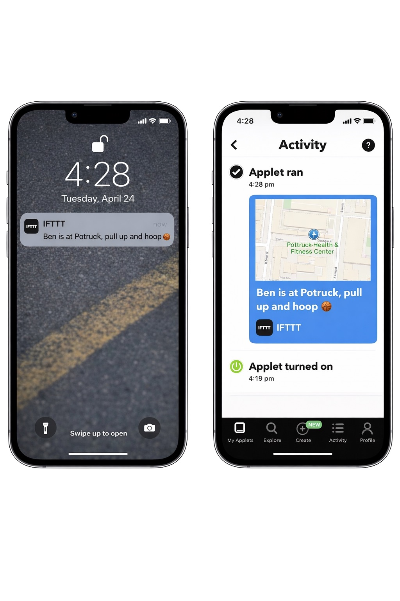

Walk into Pottruck and your group chat gets pinged automatically. No texting, no planning, just show up and your squad knows it's time.
Try the Applet
A real notification triggered by arriving at Pottruck Health & Fitness Center
Most college students want to work out more but going alone kind of sucks. And coordinating schedules over group chats is exhausting. Messages get buried, people forget, and by the time everyone replies the motivation is gone.
This applet gets rid of all that friction. Instead of asking "who wants to go to the gym?", you just go. The moment you show up at Pottruck, your friends get an automatic ping. It's a low-pressure, real-time invite to come join you. Your check-in becomes a social signal.
This uses IFTTT's built-in Location service as the trigger. It can route to a bunch of different action services like SMS, push notifications, GroupMe, Slack, or even a shared Google Calendar log. The trigger fires when your phone's GPS crosses the geofence around Pottruck.
The same location trigger can power a bunch of different automations. Here's what else opens up once your gym arrival is connected:
Log every gym visit to Google Calendar or a Google Sheet automatically. Build a streak without tracking anything yourself.
Send friends a heads-up earlier in the day like "Leg day is Friday, who's coming?"
Trigger a Spotify playlist or flip your phone to Do Not Disturb the second you walk in.
Hook it up to a shared spreadsheet so everyone can see who's been showing up. Friendly competition built in.
IFTTT's API linking framework lets two totally unrelated services share data through triggers and actions. The Location service works as a passive sensor and messaging services act as outputs. By chaining them together, you get a new kind of behavior: presence-based social signaling. Your physical location turns into a broadcast.
But this connection brings up real questions too. Location data is sensitive, and even among friends, knowing someone's exact whereabouts in real-time has privacy implications. There's also the consent issue: the applet fires every single time you enter the geofence, which means you can't quietly skip a session without your group noticing. The same tool that holds you accountable can start to feel like surveillance.
Social coordination without the effort. A passive check-in becomes an active invite. Accountability happens on its own, without anyone having to be "the planner."
The option to go solo without everyone knowing. Privacy around your routines and habits. The ability to skip a session without any social pressure.
Connect the applet once and never send a "gym?" text again. Your arrival does the talking.
Connect on IFTTT